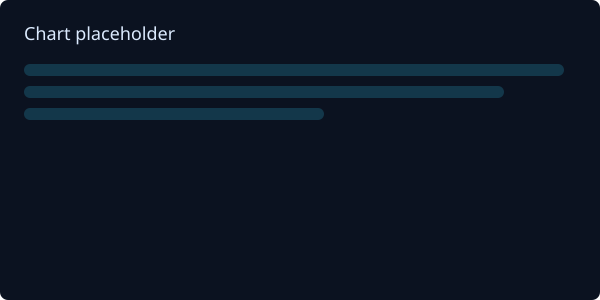

HR Analytics Dashboard
A recruiter-friendly case study showcasing the HR Analytics dashboard: model, key measures, UX, and impact.
Recruiter Summary
Quick facts hiring managers and recruiters care about.
- Role: Power BI Developer — end-to-end analytics (modeling, DAX, UX, deployment).
- What it shows: Headcount & retention trends, attrition drivers by department, hiring funnel and time-to-hire.
- Why it matters: Rapidly identifies high-attrition teams and hiring bottlenecks so HR can prioritize interventions.
Summary
Problem: Recruiters and HR leaders lacked a single view for attrition drivers, hiring funnel, and headcount trends. My role: end-to-end delivery — model, DAX, report UX, and packaging for sharing.
Screenshots & Gallery
Screenshots: click any image to view a larger version.


Key measures (consumer summary)
High-level measures used in the report — described for a non-technical audience.
- Active Headcount: Current employee count by department and role.
- Attrition Rate (rolling): Percentage of leavers over the prior 12 months to show trend.
- Time-to-hire (median): Median days to hire to highlight recruiting bottlenecks.
- Overtime Hours: Overtime by department to flag workload and capacity issues.
- Engagement Score (avg): Average engagement metric to track workforce sentiment.
Technical details (data model, DAX, PBIX) are available on request for hiring managers or technical reviewers — contact me to request a secure review.
Case Study
Summary / Problem: Talent and HR leaders lacked a single, trusted report to monitor headcount, attrition drivers, hiring funnel conversion, and productivity metrics. Teams relied on multiple spreadsheets and ad-hoc exports, which made it hard to spot trends and prioritize retention efforts.
Role & Solution: I led the end-to-end delivery: shaped a star-schema model, built robust Power Query transformations, and authored key DAX measures (rolling attrition rate, active headcount, time-to-hire median). The report UX emphasizes recruiter workflows — overview KPIs, drill-through to department-level drivers, and clear narrative captions to speed review. The solution is packaged for local PBIX review and PBIRS-ready distribution when needed.
Impact: The dashboard surfaces clear diagnostics (example metrics shown: 47 leavers and 77.1% retention). It eliminated time-consuming manual joins, improved data trust for HR reviewers, and made it faster to identify high-attrition departments and prioritize interventions. If you have precise outcome numbers (adoption, time savings), I can add them here.